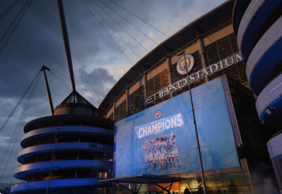

QUIENES SOMOS

28-09-2026FUNDACION DEL CLUB: Fundado originalmente el 23 de noviembre de 1880 por miembros de la iglesia de San Marcos St. Mark's en West Gorton para alejar a los jóvenes de la delincuencia y el alcoholismo Posteriormente cambió su nombre a Ardwick AFC en 1887 y adoptó de forma definitiva su denominación actual de Manchester City el 16 de abril de 1894.
La era del City Football Group: En agosto de 2008, el club dio un giro radical al ser adquirido por el Abu Dhabi United Group, propiedad del Jeque Mansour bin Zayed Al Nahyan. Esto dio paso a la creación del City Football Group, un imperio empresarial que administra múltiples equipos de fútbol en todo el planeta, con el Manchester City como su estandarte principal.
Éxito deportivo histórico: Bajo la dirección técnica de Pep Guardiola, el equipo vivió el periodo más exitoso de su historia logrando un icónico triplete continental en 2023 Champions League, Premier League y FA Cup. Además ostenta el récord absoluto de haber conquistado cuatro títulos consecutivos de la Premier League en el fútbol inglés.
Situación legal y financiera reciente: El club se encuentra atravesando un panorama institucional tenso tras un fallo emitido en septiembre de 2026 donde una comisión independiente declaró al club culpable de 114 de los 115 cargos financieros imputados por la Premier League por presuntas irregularidades cometidas entre 2009 y 2018. Aunque el club tiene previsto apelar el dictamen se mantiene la expectativa sobre las sanciones definitivas.